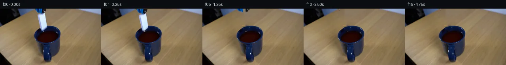

![首帧]()

Round 00
2026-11-05T00:36:21.854406+00:00像素候选变化代码 +333/−0inspection 更新
pixels 70ce54a4887c0e3d · code 9ca7017a89063e88
查看本轮 generate.py 真实 diff
--- previous/generate.py
+++ current/generate.py
@@ -0,0 +1,333 @@
+"""Source-photo pixel compositing with local, analytic motion and liquid effects."""
+from pathlib import Path
+import json
+import math
+import numpy as np
+import cv2
+from PIL import Image, ImageDraw
+from scipy.ndimage import distance_transform_edt, gaussian_filter
+from artifact_io import save
+
+ROOT = Path(__file__).resolve().parent
+W, H, FPS, N = 256, 144, 4, 20
+SOURCE = np.array(Image.open(ROOT / 'first_frame.png').convert('RGB'))
+Y, X = np.mgrid[:H, :W].astype(np.float32)
+SCALE = 4
+
+
+def polygon(points, blur=0.0):
+ im = Image.new('L', (W*SCALE, H*SCALE))
+ ImageDraw.Draw(im).polygon([(round(x*SCALE), round(y*SCALE)) for x,y in points], fill=255)
+ a = np.array(im.resize((W,H), Image.Resampling.LANCZOS), dtype=np.float32)/255
+ if blur:
+ a = gaussian_filter(a, blur)
+ return np.clip(a, 0, 1)
+
+
+# Hand-measured photographic silhouettes; no external mask data is used.
+TOOL_MASK = polygon([(88,0),(117,0),(116,4),(115,7),(112.3,10),
+ (108.5,12.7),(103.3,13.3),(100.0,11.7),
+ (96.0,11.7),(94.0,9),(91.0,4)], 0.18)
+DOMINO_MASK = polygon([(109.7,10.8),(113.4,11.8),(114.0,17),
+ (118.8,43.5),(118.8,46.5),(116.0,50),
+ (111.5,55),(108.5,58),(104.4,57),
+ (102.8,52),(100.6,41),(94.6,16.3),
+ (97.0,14.0),(102.3,12.7)], 0.25)
+# Avoid moving the blue jaw pixels with the ceramic sprite.
+DOMINO_MASK *= (1-TOOL_MASK)
+REPAIR = np.maximum(DOMINO_MASK, TOOL_MASK)
+REPAIR_BINARY = (REPAIR > 0.006).astype(np.uint8)
+
+# Restore the table using local surrounding pixels and its real photographic grain.
+telea = cv2.inpaint(SOURCE, REPAIR_BINARY*255, 4, cv2.INPAINT_TELEA).astype(np.float32)
+repaired = SOURCE.astype(np.float32).copy()
+local_grain = SOURCE[:, np.minimum(np.arange(W)+27,W-1)].astype(np.float32)
+grain_hi = local_grain - cv2.GaussianBlur(local_grain, (0,0), 1.3)
+restored = telea + 0.60*grain_hi
+# The removed tip overlaps the far inner rim. Reflect existing clean rim pixels
+# about the bowl center rather than allowing tabletop colors into the mug.
+mirror_x = np.clip(np.rint(240-X).astype(int),0,W-1)
+mirrored = SOURCE[Y.astype(int), mirror_x].astype(np.float32)
+outer_rear = 67.0 - 23.0*np.sqrt(np.maximum(0,1-((X-120)/33.0)**2))
+rim_weight = np.clip((Y-outer_rear+0.25)*2,0,1)
+rim_weight *= ((Y>42)&(Y<61)&(X>98)&(X<120))
+restored = restored*(1-rim_weight[:,:,None]) + mirrored*rim_weight[:,:,None]
+repaired[REPAIR_BINARY.astype(bool)] = np.clip(restored,0,255)[REPAIR_BINARY.astype(bool)]
+BASE = np.clip(repaired,0,255).astype(np.uint8)
+
+# Unmatte the ceramic's motion-softened edges against its restored background.
+# Keep original front-face and bevel texture; compensate the blurred lower tip.
+D_ALPHA = DOMINO_MASK.copy()
+expected = np.empty_like(repaired)
+expected[:] = [207,230,253]
+# Local axis estimates make the bevel stay darker than the broad white face.
+left_edge = 95.5 + (Y-18)*0.235
+bevel = np.clip((X-left_edge)/4.4,0,1)
+expected = expected*bevel[:,:,None] + np.array([151,165,220])*(1-bevel[:,:,None])
+contrast = np.maximum(expected-repaired,12)
+coverage = np.max((SOURCE.astype(np.float32)-repaired)/contrast, axis=2)
+# Only the soft lower end is recovered with the coverage estimate. Other pixels
+# are taken directly from the supplied photo, including the ceramic's bevel.
+lower = np.clip((Y-46)/4,0,1)
+D_ALPHA *= (1-lower) + lower*np.clip(coverage,0,1)
+D_ALPHA *= np.clip((SOURCE[:,:,2].astype(float)-repaired[:,:,2]+4)/20,0,1)
+D_RGB = SOURCE.astype(np.float32).copy()
+soft = D_ALPHA > 0.02
+D_RGB[soft] = np.clip((SOURCE.astype(np.float32)[soft] -
+ repaired[soft]*(1-D_ALPHA[soft,None])) /
+ np.maximum(D_ALPHA[soft,None],0.03),0,255)
+# In the near-transparent motion tail, retain a ceramic-colored highlight.
+D_RGB = D_RGB*(1-lower[:,:,None]) + expected*lower[:,:,None]
+
+# Split the tool along the existing joint so blue and black jaws open apart.
+split = np.clip((105.8-X)*2.5+0.5,0,1)
+LEFT_ALPHA = TOOL_MASK*split
+RIGHT_ALPHA = TOOL_MASK*(1-split)
+
+# The exact source liquid footprint is measured by its dark red color.
… diff truncated; 246 more lines …